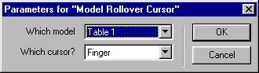
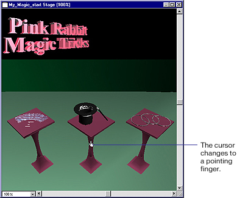

What's New in Director 8.5 > Director 8.5 Tutorial > Set model rollover cursors
What's New in Director 8.5 > Director 8.5 Tutorial > Set model rollover cursors |
Set model rollover cursors
Often in interactive movies, the pointer transforms into a hand when it's over an object the user can click, such as a link or hot spot. The Model Rollover Cursor behavior lets you select a model, then specify how the pointer will appear when it's over that model.
A model can consist of a single object, or multiple objects collected together as one model.
You'll now specify the three table models, which include the objects on the table, that will cause the pointer to change into a pointing finger as it rolls over the model.
1 |
In the Library, with 3D > Actions selected, drag the Model Rollover Cursor behavior from the Library palette to the Magic tricks sprite on the Stage. |
2 |
In the Parameters for Model Rollover Cursor dialog box, specify the following: |
In the "Which model?" pop-up menu, select Table 1. |
|
In the "Which cursor?" pop-up menu, verify that Finger is selected. Then click OK.
 |
|
Note: Because the Model Rollover Cursor behavior is an independent action, you do not need to assign a trigger behavior to it. |
|
3 |
Again drag the Model Rollover Cursor behavior from either the Library or the Cast window to the Magic tricks sprite. In the Parameter for Model Rollover Cursor dialog box, this time select Table 2 from the "Which model?" pop-up menu. |
4 |
In the "Which cursor?" pop-up menu, verify that Finger is selected. |
5 |
Drag the Model Rollover cursor from the Cast window to the Magic tricks sprite for the third and final time. Select Table 3 in the "Which model?" pop-up menu and Finger in the "Which cursor?" pop-up menu. |
Note: Remember to save your work frequently. |
|
6 |
Play the movie and move the pointer over the tables, and the items on the tables, to see the pointer change into a pointing finger. When the pointer is not over the models to which the Model Rollover Cursor is applied, it changes back into an arrow. |
7 |
When you finish viewing this behavior, stop and rewind the movie.
 |